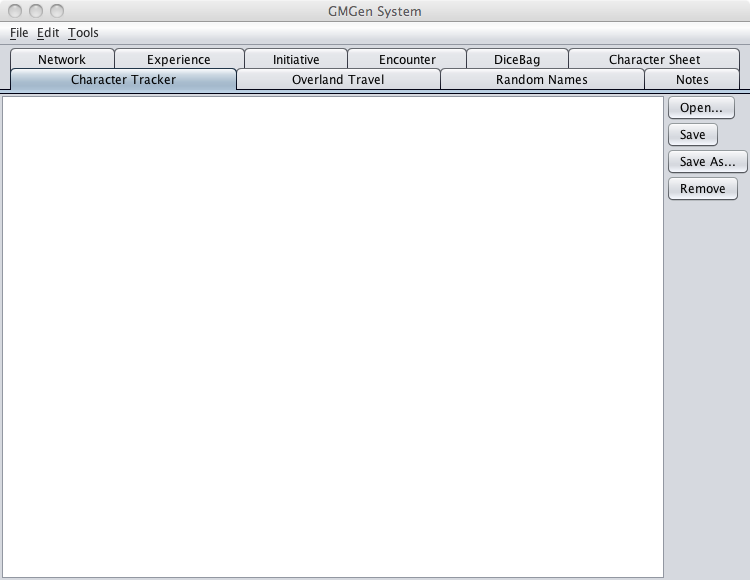

The Character Tracker Tab allows you to manage characters loaded in GMGen.

GMGen can alter some elements of a character, most notably experience points. When the character has been modified an asterisk will appear beside the characters name indicating that it has been updated and has not been saved. Clicking the Save button will save the current state of the character. Clicking the Save As button will allow you to save the character under a new file name. Clicking the Remove button will remove the character from all GMGen tabs but will not close the character from PCGen. Clicking the Load button will open a character in PCGen and GMGen.